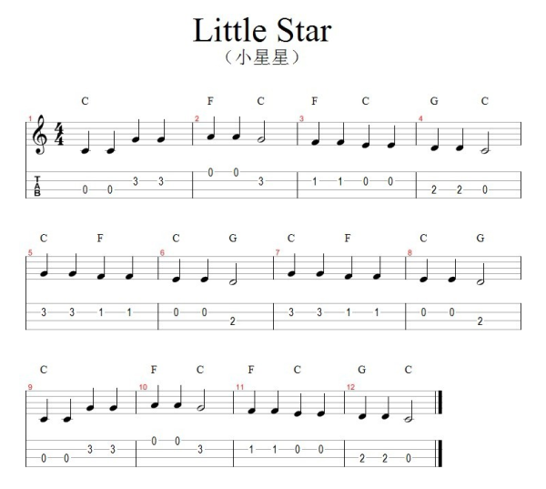

返回主页
《小星星》和弦谱

单音与和弦的作用
基础和弦（Chord）
通用和弦（Chord）
《新年好》和弦谱
《祝你生日快乐》和弦谱
《幸福拍手歌》和弦谱
和弦（Chord）和作曲
天空之城（和弦讲解）
音乐更复杂并不一定就是更好。
Mozart的《小星星》和Beethoven的《欢乐颂》就非常简单
Van Gogh、吴冠中、Einstein的东西也力求简单
《小星星》四线谱（指弹谱）
《小星星》五线谱+简谱（汉语）
《小星星》五线谱（英语）
莫扎特（Mozart）的《小星星》（1778）。Mozart根据《小星星》的主题（Theme/主旋律）的节奏与旋律，配有十二段不同的变奏（Variation），就像创作出12种不同的和弦（Chord）或和声 （Harmony）的乐谱。根据简谱（五线谱）添加和弦（Chord），就是根据主题（Theme/主旋律）创作变奏（variation）的过程。这是二次创作（改编）的过程。
《小星星》包含13小节：第一小节为主题（Theme/主旋律），接下来是变奏（Variation/和弦）1到12。Twelve Variations on "Ah vous dirai-je, Maman", K. 265/300e, is a piano composition by Wolfgang Amadeus Mozart, composed when he was around 25 years old (1781 or 1782). This piece consists of twelve variations on the French folk song "Ah! vous dirai-je, Maman". The French melody first appeared in 1761, and has been used for many children's songs, such as "Twinkle Twinkle Little Star", "Baa, Baa, Black Sheep" and the "Alphabet Song".
This work was composed for solo piano and consists of 13 sections: the first section is the theme, the other sections are Variations I to XII. Only Variations XI and XII have tempo indications, Adagio and Allegro respectively.
基础和弦（Chord）
version:1.0; jobnet@188.com © retter2012.com